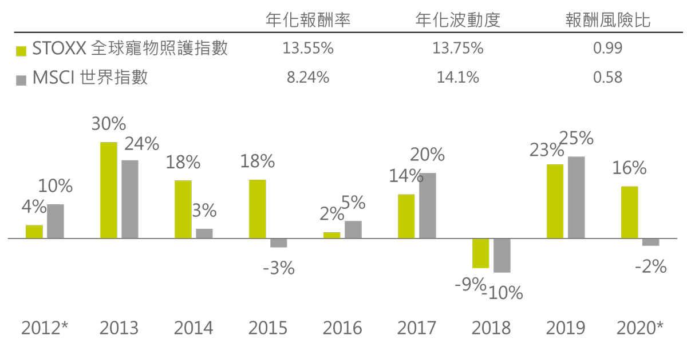

》孤獨新時代，毛小孩創造陪伴大商機
少子化、老年化、單身化的孤獨新時代，與你生活或共老的，不一定是父母、配偶或子孫，而是貼心陪伴的毛小孩！由於貓狗地位的大幅提昇，角色轉變成家人，所以毛爸媽花錢毫不手軟，要牠吃的好、過的好是基本，更希望牠活的久、活的健康，因而引爆陪伴大商機！根據business insider報導，美國寵物主人每年約花1512美元，以毛小孩平均壽命15歲估算，2024年的全球預估數量6.7億計算，潛在的循環規模上看15兆美元，千萬別小看牠的威力！
(資料來源：businessinsider，Catster，APA、FEDIAF、2019中國寵物行業白皮書，百揚投資整理，2020/8，商機計算公式：512美元* 15年* 6.7億=15兆美元)
30年前，貓狗，難入大廳，現在登堂入室，共枕而眠，為何會有如此改變，因為牠們值得！以最常見汪星人來說，當你每天拖著疲憊身軀回家，或幾天未歸，一開門牠就撲上前熱烈迎接，比任何人都還要高興，而且還一直黏著你，只希望你抱抱牠，再鋼鐵的心都會被這股熱情融化，這也讓毛小孩走進千家萬戶，成為「新家人」。
既然稱貓狗為毛小孩，養牠們當然就跟養小孩一樣，費時、費心、費金錢，從餵飯、倒水、剷屎、陪玩耍、出門散步，到每月為牠們點藥劑、每年施打預防針、生病時要帶去看獸醫，天冷時添加衣物，三不五時還要帶去美容。總而言之，這是一筆省不了的長期開銷，讓全球寵物經濟穩定成長，帶給相關公司穩定獲利來源。
根據歐洲最大指數公司Stoxx編制的全球Pet寵物照護指數，每股盈餘(EPS)每年穩定成長，預估2021年成長12.6%，2022年成長11.4%，整體指數EPS從今年預估的11.87美元升至14.89美元。(資料來源：Bloomberg、百揚投資整理，截至2020/8/24)
五年前，百揚投資掌握科技趨勢，推出一系列AI基金，期初即參與的投資人獲得不少回報；今年，以人的需求出發，瞄準人口與社會變遷衍生的投資契機，推出年輕新生活傘型基金，其中全球Pet毛小孩基金，專注投資寵物產業鏈，涵蓋食用品、藥品、醫療保健等，基金追蹤之標竿指數編撰以來，年化報酬13.89%，年化波動13.74%，報酬風險比1.01倍，優於MSCI世界指數表現。
毛小孩多過小孩的時代來了！萌生出的新經濟，是生生不息的循環商機，而且隨著數量的增加，規模只會越來越大，長線的投資機會，當然值得納入收藏！
Stoxx全球 Pet 寵物照護 VS MSCI世界指數
資料來源：Bloomberg、百揚投資整理，截至2020/8/24，以Stoxx編制之全球 Pet 寵物照護指數為例，起始日：2012/6/18，以過去績效進行模擬情境之報酬率，僅為歷史資料模擬結果，不代表任何基金或相關投資組合實際報酬率及未來績效保證；不同時間進行模擬操作，結果可能不同